Das Buchen Dialog Stapel ist das Hauptbuchungsprogramm in der WinLine. Es kann sowohl zum Einzelbuchen als auch für die Erfassung von Massendaten (Stapel) verwendet werden. Die erfassten Buchungszeilen können wahlweise sofort oder aber auch erst zu einem späteren Zeitpunkt gebucht werden.
Damit können auch eigene Stapel abgelegt bzw. gespeichert werden, die auch immer wieder verwendet werden können - und somit als Ausgangsbasis für automatisierte Buchungsabläufe dienen können.
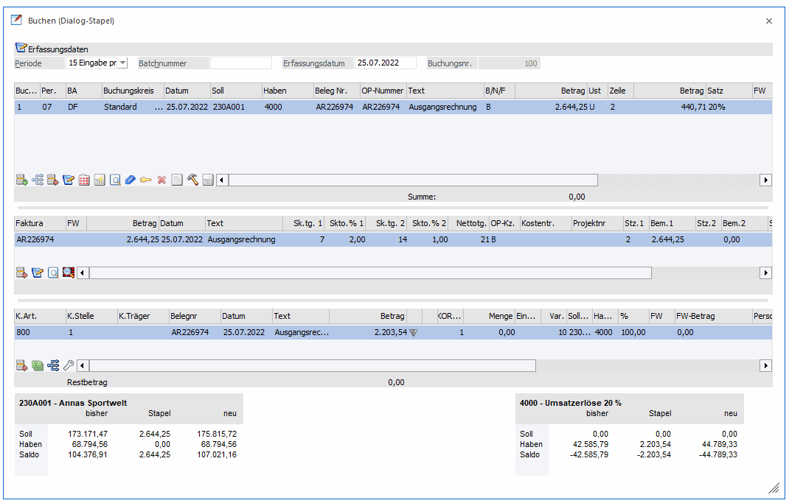
Die Buchungsmaske ist in mehrere Abschnitte gegliedert, wobei sich das Aussehen abhängig von der Buchungsart immer ändert. Gewisse Teile bleiben aber immer gleich:
Ø Periode
Standardmäßig wird hier "14 automatisch" vorgeschlagen. Ist dieser Eintrag ausgewählt, leitet sich die Periode aus dem ersten Buchungsdatum, das in der Erfassungstabelle eingegeben wird, ab. Wird das Datum in der Erfassungsmaske bestätigt, wird auf Grund dieses Datums auch die Periode vorgeschlagen - danach werden alle nachfolgenden Buchungen in diese Periode gebucht. Zusätzlich kann aus der Auswahllistbox die Periode ausgewählt werden, in die alle im Stapel erfassten Buchungen gebucht werden sollen. Das Buchungsdatum, das in den Erfassungszeilen eingegeben wird, übersteuert diese Periode nicht. Bei Buchungen die Kosteninformationen beinhalten wird diese Periode auch mit in die Kostenrechnung übergeben. Stellt man die Auswahllistbox für die Periodeneinstellung auf "Eingabe pro Buchung", kann pro Erfassungszeile eine beliebige Periode verwendet werden. Diese Periodeneinstellung kann auch in WinLine Start in den FIBU-Parameter als Standard definiert werden.
Ø Batchnummer
In diesem Feld kann eine sogenannte Batchnummer hinterlegt werden, die auch in allen anderen Buchungsprogrammen zur Verfügung steht. Dadurch können Buchungen zu einem "Belegkreis" zusammengefasst werden. Wurde einmal eine Batchnummer eingetragen und damit Buchungen durchgeführt, wird diese Batchnummer benutzerspezifisch und buchungsprogrammunabhängig gespeichert (sofern im WinLine START in den FIBU-Parametern festgelegt wurde, dass die Batchnummer automatisch hochgezählt werden soll). Ruft also der gleiche Benutzer wieder ein Buchungsprogramm auf, wird die zuletzt hinterlegte Batchnummer vorgeschlagen. Die Batchnummer kann durch Drücken der + - Taste jeweils um 1 hochgezählt werden. In den FIBU-Parametern (WinLine START, Menüpunkt Optionen/FIBU-Parameter) kann gesteuert werden, dass diese Batchnummer automatisch hochgezählt wird.
Ø Erfassungsdatum
Hier wird das Einstiegsdatum, das Sie in WinLine beim Starten eingegeben haben, vorgeschlagen. Damit können Sie nachvollziehen, WANN eine Buchung tatsächlich erfasst worden ist. Für die Nachvollziehbarkeit der Erfassungsreihenfolge ist natürlich die automatisch vom System vergebene und unbeeinflussbare Prima Nota Nummer relevant und ausreichend. In WinLine START / Parameter / Applikationsparameter / FIBU-Parameter / Buchen kann für das Erfassungsdatum eingestellt werden, ob das Erfassungsdatum pro Stapel editierbar, pro Buchung editierbar oder nicht editierbar sein soll.
Ø Buchungsnr.
Hier wird die letzte Buchungsnummer angezeigt.
Hinweis
Wird ein Stapel geladen, der aus dem Menüpunkt "Buchungen bearbeiten" erzeugt wurde, wird hier ein Eingabefeld eingeblendet, in dem die Position, an der die Buchungen eingefügt werden sollen, noch verändert werden kann. Buchungsnummern, die im definitiven Bereich liegen, können nicht angegeben werden.
Erfassungstabelle
In dieser Tabelle werden die einzelnen Geschäftsfälle erfasst, wobei alle verschiedenen Buchungsarten (abhängig von der verwendeten Buchungsperiode) verwendet werden können. Es können auch Buchungen mit Betrag 0 abgesetzt werden, wenn man in der Buchungszeile zumindest das Feld Betrag einmal angewählt hat. Beim Verbuchen erscheint die Meldung
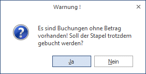
Wenn es sich bei den Buchungen um KF- oder DF-Buchungen handelt, werden diese sofort mit dem OP-Kennzeichen -1 (ausgeglichen) belegt.
Verlassen einer Buchungszeile
Beim Verlassen einer ungültigen oder nicht vollständig gefüllten Buchungszeile kann durch den Eintrag
[BUCHEN]
FragenZeileVerlassen=1
in der mesonic.ini eine Meldung ausgegeben werden.

Verbuchen eines Stapels - Warnungen
Bei den nachfolgenden Warnungen stehen folgende Optionen zur Verfügung:
ü Ja
Der Buchungsvorgang wird
fortgesetzt und der Stapel wird verbucht.
ü Ja, immer
Der Buchungsvorgang
wird fortgesetzt, zusätzlich wird benutzerabhängig gespeichert, dass diese Frage
nicht mehr gestellt werden und der Stapel zukünftig kommentarlos gebucht werden
soll.
ü Nein
Der Buchungsvorgang wird
abgebrochen.
Vor dem Verbuchen eines Stapels wird geprüft, ob Buchungen ohne Betrag im Stapel existieren.
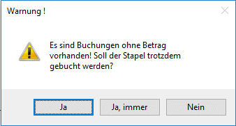
Vor dem Verbuchen eines Stapels wird geprüft, ob Konten mit Sachkonten-OP verwendet wurden, für die keine Referenznummer eingegeben wurde. In diesem Fall wird eine Warnung ausgegeben, in der bis zu max. 10 betroffene Buchungsnummern angezeigt werden. Der Stapel kann aber trotzdem verbucht werden.
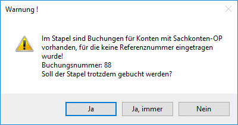
Beim Verbuchen eines Stapels wird geprüft, ob B-Buchungen für Personenkonten vorhanden sind. Ist dies der Fall, wird eine Warnung ausgegeben, bis zu 10 betroffene Buchungsnummern werden aufgelistet. Der Stapel kann aber trotzdem verbucht werden.
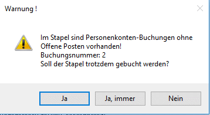
Vor dem Verbuchen eines Stapels wird geprüft, ob inaktive Steuerzeilen bebucht wurden.
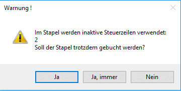
Vor dem Verbuchen eines Stapels wird geprüft, ob Buchungen auf Anlagenkonten ohne zugeordneter/erstellter Anlage existieren.
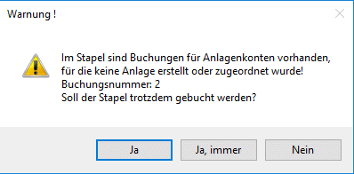
Die Einstellung "Ja, immer" wird für folgende Warnungen in der T004 gespeichert unter den Einträgen:
- FB3BET0OK-Benutzernummer - Buchungen mit Betrag 0
- FB3BPKOK-Benutzernummer - B-Buchungen für Personenkonten
- FB3INSTZOK- Benutzernummer - Inaktive Steuerzeilen
- FB3NSOPOK- Benutzernummer - Buchungen auf Sachkonten-OP-Konten ohne Referenznummer
- FB3NANLOK- Benutzernummer - Buchungen auf Anlagenkonten ohne zugeordneter/erstellter Anlage
Soll die Warnung im Buchungsprogramm wieder erscheinen, muss der jeweilige Eintrag aus der T004 entfernt werden.
Zwischenspeichern von Buchungsstapeln
Je nach FIBU-Parameter Einstellung erfolgt das automatische Zwischenspeichern von Buchungsstapeln im Buchen Dialog-Stapel, Buchen Dialog-Stapel Quick und Buchen Zahlungsmittelkonten.
Das Zwischenspeichern kann im FIBU-Parameter für einen Buchungsstapel nach jeweils einer Anzahl erfasster Buchungen bzw. seit der letzten Speicherung einer Anzahl an vergangenen Minuten eingestellt werden.
Beim ersten Speichern wird die erste freie Stapelnummer im Bereich 500-999 verwendet. Dieser Stapel bleibt erhalten, bis der Stapel verbucht oder das Fenster geschlossen wird.
Nach einem Systemabbruch kann dieser Stapel mit der Bezeichnung "AutoSave - Benutzer - Datum Uhrzeit" wie gewohnt geladen werden.
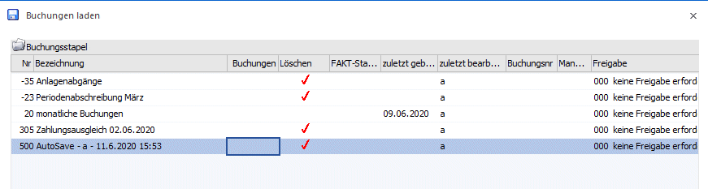
Buchungsinformationen
Die zweite und dritte Tabelle der Buchungsmaske beinhalten die Buchungsinformationen, die zusätzlich bearbeitet werden können, wobei die Tabellen - abhängig von der durchgeführten Buchung - immer einen anderen Inhalt haben können.
Standardmäßig werden in der zweiten Tabelle OP-Informationen und in der dritten Tabelle Kostenrechnungsinformationen dargestellt.
Werden Zahlungen (DZ- oder KZ-Buchungen) erfasst, kann es keine Kostenrechnungsinformationen geben. Daher können in der dritten Tabelle Gutschriften erfasst werden - sofern es für den Kunden/Lieferanten keine Fakturen zum Ausgleichen gibt.
Buttons
Mit den Buttons können verschiedene Aktionen durchgeführt werden. Nachfolgend finden Sie eine Beschreibung aller vorhandenen Buttons:
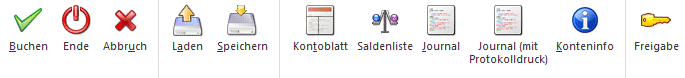
Ø Buchen
Durch Anklicken des Buchen-Buttons (kann auch durch Drücken der F5-Taste, F12-Taste oder mit der Tastenkombination Shift+Enter ausgelöst werden) werden alle Buchungen, die in den Tabellen erfasst wurden, gebucht - es werden die Salden der Konten verändert und es werden die OP-Informationen bzw. auch die KORE-Informationen geschrieben. Im Anschluss daran werden alle Buchungen aus der Maske gelöscht und es können weitere Buchungen erfasst werden.
Ø Ende
Damit wird das Fenster geschlossen. Wurden bereits mehrere Buchungszeilen erfasst, die noch nicht verbucht wurden, wird folgende Meldung ausgegeben:

Wird die Meldung mit JA bestätigt, werden alle Buchungszeilen gelöscht. Wird die Meldung mit NEIN bestätigt, kann das Buchungsprogramm normal weiterbearbeitet werden.
Ø Abbruch
Durch Betätigen des Abbruch-Buttons werden alle in der Erfassungstabelle befindlichen Journalzeilen aus dem Zwischenspeicher gelöscht.
Ø Laden
Wurde ein Buchungsstapel mit SPEICHERN unter einer Nummer und einer Beschreibung abgespeichert, kann dieser Stapel jederzeit wieder in die Erfassungsmaske geladen und weiterbearbeitet werden.
Ø Speichern
Erfasste Buchungszeilen können jederzeit durch Anwahl dieses Buttons unter einer bestimmten Nummer und einer Beschreibungszeile gespeichert werden, damit der Stapel zu einem späteren Zeitpunkt wieder abgerufen und weiterbearbeitet werden kann (siehe Laden). Buchungszeilen, die hier gespeichert wurden, können auch über die Funktion AUTO-BUCHEN mit Hilfe eines selbstdefinierbaren Aktionsplanes periodisch abgerufen werden (Wiederkehrende Buchungen). Nähere Informationen entnehmen Sie bitte dem Kapitel Buchungen speichern.
Achtung
Das bedeutet aber nicht, dass dadurch z.B. ein gespeicherter Stapel gelöscht wird. Wie ein bestehender Stapel gelöscht wird, entnehmen Sie bitte dem Kapitel Buchungen laden.
Ø Kontoblatt
Durch Betätigen des Kontoblatt-Buttons wird für jedes Konto, das im Stapel angesprochen wurde, ein Kontoblatt angezeigt, das die aktuellen Salden, die erfassten Buchungszeilen und die daraus resultierenden Salden (die entstehen würden, wenn der Stapel abgesetzt werden würde) enthält.
Ø Saldenliste
Durch Betätigen des Saldenliste-Buttons wird eine neue Liste geöffnet, in der für die im Stapel verwendeten Konten der alte Saldo, die Summen der Buchungen und der entsprechende neue Saldo angezeigt werden.
Ø Journal
Durch Betätigen des Journal-Buttons wird das Buchungsjournal angezeigt, das alle erfassten Buchungszeilen enthält. Neben den Buchungszeilen werden auch (wenn vorhanden) die OP-Informationen (welche Fakturen werden erstellt bzw. welche Fakturen werden gezahlt) und die KORE-Informationen (welcher Betrag wird mit welcher Kostenart auf welche Kostenstelle gebucht) enthalten.
Ø Journal (mit Protokolldruck)
Bei Drücken dieses Buttons erfolgt automatisch eine Prüfung aller im Stapel erfasster Buchungen auf ihre Richtigkeit. Sollten Fehler vorhanden sein, werden diese gleich in einem Prüfprotokoll (Buchungsprotokoll) ausgegeben. Dabei wird der gerade eingestellte Drucker verwendet.
Ø Konteninfo
Wird dieser Button gedrückt (kann bereits durch die Einstellung aus den Fenstern "Buchen Eingangsrechnungen", "Buchen Ausgangsrechnungen", "Buchen Zahlungsmittelkonten" oder "Buchen Splitbuchungen" gedrückt sein), werden eigene Fenster für die Konteninfos geöffnet. Dabei gibt es jeweils ein Fenster für das Soll- und ein Fenster für das Haben-Konto. Hier können Sie z.B. die Kontennotiz oder die Adresse oder viele andere Felder des Kontenstammes anzeigen lassen. Bei Wünschen für Anpassungen dieses Formulars ist Ihnen Ihr mesonic-Betreuer gerne behilflich.
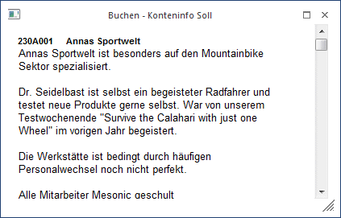
Welche Informationen angedruckt werden sollen, kann frei definiert werden. (Siehe auch Kapitel Buchen - Konteninfo Soll bzw. Kapitel Buchen - Konteninfo Haben.)
Ø Freigabe
Durch Drücken dieses Buttons wird das Freigabefenster geöffnet, um den Freigabestatus eines Buchungsstapels verändern zu können.
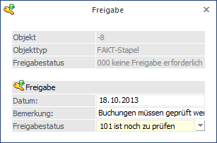
Beim Anlegen bzw. Speichern eines neuen Stapels wird der in der "Freigabedefinition" festgelegte Freigabestatus vergeben (ACHTUNG: dies erfolgt nur bei Neuanlage eines Stapels! Wird ein bestehender Stapel verändert und gespeichert, so wird der Freigabestatus nicht automatisch verändert!).
Die Funktion des Freigabe-Buttons steht nur für gespeicherte Stapel zur Verfügung. D.h. wird das Buchungsfenster geöffnet und Buchungen erfasst, so hat der Freigabe-Button keine Funktionalität.
Wird in einem Buchungsfenster der Freigabestatus eines Stapels verändert, so wird dieser sofort in die Datenbank zurück geschrieben; ein Speichern des Stapels ist dazu nicht notwendig.
Beim Speichern des Stapels wird in der Tabelle jener Freigabestatus vorgeschlagen der lt. Freigabedefinition verwendet werden soll. Dieser kann jedoch nach Bedarf verändert werden.
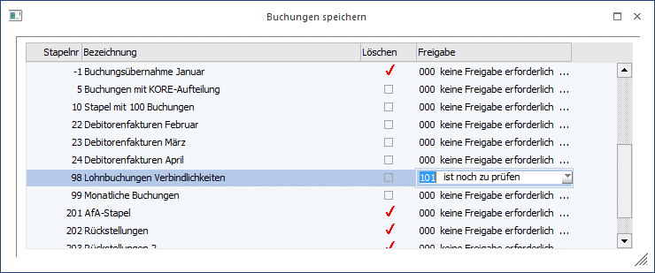
Beim Laden von Stapeln wird der Freigabestatus zur Info angezeigt:
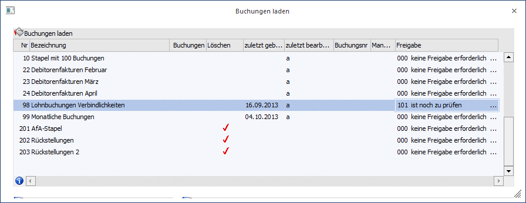
Tabellenbuttons Buchen-Fenster
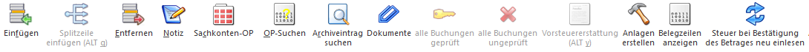
Ø Einfügen /Entfernen
Durch Drücken des Einfügen-Buttons wird an der Stelle, an der sich der Cursor befindet, eine neue Eingabezeile eingefügt. Mit dem Entfernen-Button wird die aktive Zeile aus der Erfassungstabelle gelöscht.
Ø Splitzeile einfügen
Es wird eine neue Splitzeile eingefügt.
Wird der Button geklickt, wird unterhalb der aktuellen Zeile eine neue, leere Splitzeile eingefügt.
Der Button steht nur dann zur Verfügung, wenn der Focus in der letzten Zeile einer vollständigen Buchung steht und das Soll- oder das Haben-Konto entfernt wird.
Ø Notiz
Für jede Buchungszeile kann durch Anklicken des Notiz-Buttons ein beliebig langer Buchungstext hinterlegt werden. Dieser Text kann auch auf den diversen Auswertungen angedruckt werden (Buchungsjournal, Kontoblatt).
Ø Sachkonten-OP
Durch Anwahl des Buttons "Sachk.-OP" kann eine OP-Verwaltung für Sachkonten durchgeführt werden. Voraussetzung dafür ist, dass das Sachkonto entsprechend angelegt wurde.
Ø OP suchen
Nach Drücken der OP-Suchen Taste kann nach einer Fakturennummer gesucht werden. Es werden vom Programm alle Fakturen aufgelistet, die den Suchbegriff an irgendeiner Stelle der Fakturennummer beinhalten. Nähere Details finden Sie im Kapitel Fakturen suchen.
Ø Archiv
Befindet man sich in der Zahlungstabelle kann man automatisch in das Archiv wechseln. Die Kontonummer der aktivierten Rechnung wird im Fenster der Archivsuche automatisch vorbelegt. (Nähere Informationen zur Archivsuche entnehmen Sie bitte dem WinLine ALLGEMEIN - Handbuch).
Ø Dokument anzeigen
Wenn in der Buchungszeile ein Archivdokument hinzugefügt wurde (entweder durch Eingabe einer Archivnummer, oder durch Drag&Drop eines Dokuments auf die Buchungszeile) dann kann über diesen Button das Archivdokument direkt angezeigt werden.
Auch Auto-Archiv-Dokumente der in der WinLine FAKT erzeugten Belege werden angezeigt.
Wenn keine Archivnummer hinterlegt ist, dann bleibt der Button inaktiv.
Ø Alle Buchungen geprüft
Es werden alle Buchungen als geprüft gekennzeichnet, indem die Checkbox in der Spalte "Freigabe" eingetragen wird.
Ø Alle Buchungen ungeprüft
Es werden alle Buchungen als ungeprüft gekennzeichnet, indem die Checkbox in der Spalte "Freigabe" herausgenommen wird.
Ø Vorsteuererstattung
Wird dieser Button geklickt, wird das Fenster "Vorsteuererstattung - Eingabe" geöffnet.
Ø Anlagen erstellen
Wird ein Anlagen-Neuzugang gebucht, so kann mittels dieses Buttons die Anlage erfasst werden, ohne später in die WinLine ANBU wechseln zu müssen.
Ø Belegzeilen anzeigen
Es werden die entsprechenden Belegzeilen am Bildschirm ausgegeben.
Ø Steuer bei Bestätigung des Betrages neu einlesen
Wird dieser Button aktiviert, dann wird bei jeder Betragsbestätigung (durch Pfeiltaste oder Enter) die Steuerzeile neu eingelesen, der Steuerbetrag gerechnet und gegebenenfalls geändert ausgewiesen. Beim Öffnen des Buchungsprogrammes ist der Button immer deaktiviert.
Tabellenbuttons OP-Fenster
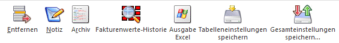
Ø Entfernen
Durch Drücken des Entfernen-Buttons wird die entsprechende Zeile, in der sich der Cursor befindet, gelöscht.
Ø Notiz
Für jede Buchungszeile kann durch Anklicken des Notiz-Buttons ein beliebig langer Buchungstext hinterlegt werden. Dieser Text kann auch auf den diversen Auswertungen angedruckt werden (Buchungsjournal, Kontoblatt).
Ø Archiv
Befindet man sich in der Zahlungstabelle kann man aut ,omatisch in das Archiv wechseln. Die Kontonummer der aktivierten Rechnung wird im Fenster der Archivsuche automatisch vorbelegt. (Nähere Informationen zur Archivsuche entnehmen Sie bitte dem WinLine ALLGEMEIN - Handbuch).
Ø Fakturenwerte-Historie
Über diesen Button öffnet sich das Fenster "Fakturenwerte-Historie". Wird eine Buchung geändert, für die bereits eine Faktura in der Fakturentabelle erstellt wurde (z.B. beim Bearbeiten eines geladenen Stapels), wird dieser OP wie bisher mit den Werten aus der Buchung bzw. aus dem Personenkonto neu erzeugt. Allerdings werden zuvor einige Werte des "alten" OP in eine Temp-Table weggespeichert, damit sie per Drag&Drop aus dem Fenster "Fakturenwerte-Historie" in die Fakturentabelle übernommen werden können. Details dazu entnehmen Sie bitte dem Kapitel Fakturenwerte-Historie.
Ø Ausgabe Excel
Der Inhalt der Fakturentabelle kann in eine Excel-Tabelle ausgegeben werden.
Ø Tabelleneinstellungen speichern
Die Spalten einer Tabelle können grundsätzlich an beliebige Positionen verschoben, bzw. in der Breite entsprechend angepasst werden. Durch Anwahl des Buttons "Tabelleneinstellungen speichern" werden die Einstellungen benutzerspezifisch gespeichert und bei dem nächsten Aufruf des Programmpunktes wieder vorgeschlagen.
Ø Gesamteinstellungen speichern
Im Gegensatz zu "Tabelleneinstellungen speichern" können mit "Gesamteinstellungen speichern" mehrere Tabellenaufbauten gespeichert und nach Wunsch geladen werden. Zusätzlich werden Sonderfunktionen der Tabelle (z.B. "Spalte gruppieren") ebenfalls bei der Speicherung bedacht.
Tabellenbuttons KORE-Fenster

Ø Entfernen
Durch Drücken des Entfernen-Buttons wird die entsprechende Zeile, in der sich der Cursor befindet, gelöscht.
Ø KORE wiederherstellen
Wird dieser Button angeklickt, werden alle bisherigen Änderungen im KORE-Bereich rückgängig gemacht
Ø Aufteilen
Beschreibung zur KORE-Aufteilung finden Sie im Abschnitt KORE-Periodenaufteilung.
Ø Verteilungsschlüssel auswählen
Ist eine Kostenart mit einem Verteilungsschlüssel eingetragen, öffnet sich durch einen Doppelklick auf diesen Button das Fenster "Buchen - Auswahl Kostenarten-Verteilungsschlüssel". In diesem Fenster werden die ausgewählte Kostenart mit Nummer und Bezeichnung, sowie die Buchungsnummer und das Buchungsdatum zur Info angezeigt. Über die Combobox "Verteilungsschlüssel" kann ein anderer im Kostenartenstamm zu dieser Kostenart hinterlegter Verteilungsschlüssel oder kein Verteilungsschlüssel ausgewählt werden.
Wird ein anderer Verteilungsschlüssel ausgewählt und mit dem Button OK oder der F5-Taste bestätigt, werden die neuen Verhältniszahlen entsprechend berechnet und die Angaben in der KORE-Tabelle geändert.

Ø Ausgabe Excel
Durch Anwahl des Buttons "Ausgabe Excel" wird der Inhalt der Tabelle nach Microsoft Excel übergeben.
Ø Tabelleneinstellungen speichern
Die Spalten einer Tabelle können grundsätzlich an beliebige Positionen verschoben, bzw. in der Breite entsprechend angepasst werden. Durch Anwahl des Buttons "Tabelleneinstellungen speichern" werden die Einstellungen benutzerspezifisch gespeichert und bei dem nächsten Aufruf des Programmpunktes wieder vorgeschlagen.
Ø Gesamteinstellungen speichern
Im Gegensatz zu "Tabelleneinstellungen speichern" können mit "Gesamteinstellungen speichern" mehrere Tabellenaufbauten gespeichert und nach Wunsch geladen werden. Zusätzlich werden Sonderfunktionen der Tabelle (z.B. "Spalte gruppieren") ebenfalls bei der Speicherung bedacht.
Taste "F7"
Da die Standard-Tabellen nur einige wenige Zeilen darstellen können (aus Platzgründen) können Sie jede Eingabetabelle mit der Taste "F7" auf Fenstergröße vergrößern. Dies kann auch automatisiert werden, wenn Sie nach Drücken der rechten Maustaste in der zu vergrößernden Tabelle die Option "Tabelle in Fenstergröße" bestätigen.
Fußteil der Erfassungsmaske
Im Fußteil der Erfassungsmaske werden die Summen (Soll und Haben) sowie der Saldo der Konten der gerade aktiven Buchungszeile dargestellt. Handelt es sich bei dem Konto um ein Fremdwährungskonto (im Kontenstamm muss eine fixe Fremdwährung hinterlegt sein), dann werden in einer eigenen Zeile auch noch die Fremdwährungswerte angezeigt.
Ø Bisher
Hier werden die Werte dargestellt, die das Konto zurzeit tatsächlich aufweist.
Ø Stapel
Hier werden die Summen dargestellt, die durch die Journalzeilen im aktiven Buchungsstapel errechnet werden.
Ø Neu
Hier werden die Werte dargestellt, die sich NACH Buchen des Stapels ergeben WÜRDEN (also eine Saldenvorschau, die die Buchungszeilen des Stapels bereits berücksichtigt). So können Sie z.B. schon während der Erfassung kontrollieren, ob der Saldo des Bankkontos lt. Bankauszug erreicht ist oder ob eventuell in einer Zeile ein Eingabefehler vorliegt.
Hinweis
Handelt es sich bei dem Konto um ein Hauptbuchkonto, dann werden nur die Werte dargestellt, die direkt auf das Konto gebucht wurden, d.h., die Werte von zugewiesenen Nebenbuchkonten werden nicht dargestellt.
Datenfelder der Erfassungstabelle
Ø Freigabe
In den FIBU-Parametern kann für unterschiedliche Stapeltypen eine Buchungsfreigabe definiert werden. Nur wenn Buchungsfreigaben definiert wurden, erhält man ganz links in der Buchungstabelle die Spalte Freigabe. Diese Checkbox zeigt an, ab eine Buchung bereits geprüft und freigegeben ist oder nicht. Der Buchungsstapel kann nur verbucht werden, wenn alle Buchungen freigegeben sind.
Ø BA
Buchungsart. Mit der Buchungsart werden gewisse Funktionen des Buchungsprogramms gesteuert. (z.B. Vorbesetzung der Konten, des Textes, etc.). Siehe dazu Kapitel Buchungsarten.
ü Standardbuchungsarten sind:
B
(Sachbuchung), DF (Debitorenfaktura), KF (Kreditorenfaktura), DZ (Zahlung einer
DF), KZ (Zahlung einer KF), EB (Eröffnungsbuchung) und AB (Abschlussbuchung)
ü Individuelle Buchungsarten:
Es
können beliebige eigene Buchungsarten definiert werden, um Buchungsabläufe zu
automatisieren (z.B. Ersatzbuchungsarten, Buchungsarten für Mikrostapeln).
Achtung
Die Buchungsart AB - Abschlussbuchung kann nur in der Abschlussperiode und die Buchungsart EB - Eröffnungsbuchung kann nur in der Eröffnungsperiode verwendet werden.
Hat ein Anwender keine Berechtigung für eine Buchungsart, so wird diese in der Auswahllistbox nicht angezeigt, und ist somit auch nicht auswählbar.
Ø Buchungskreis
Diese Spalte wird im Buchungsprogramm angezeigt, um einen Buchungskreis der Buchung zuzuordnen, wenn in dem Programm
1 Stammdaten
1 Buchungskreise
Buchungskreise definiert wurden.
In der Auswahllistbox werden nur jene Buchungskreise angezeigt, für die der Benutzer die Berechtigung hat.
Vorgeschlagen wird der Buchungskreis Standard oder der in der Buchungsart hinterlegte Buchungskreis.
Diverse Auswertungen können nach Buchungskreisen selektiert werden.
Ø Datum
Buchungsdatum. Durch Drücken der F3-Taste kann das aktuelle Systemdatum übernommen werden. Steht im Feld "Periode" der Wert "14 - automatisch", dann wird nach Bestätigung des Datumsfeldes die Periode vom Buchungsdatum abgeleitet.
Es können alle Perioden des Wirtschaftsjahres parallel bebucht und ausgewertet werden, wobei aber für jede Buchungsperiode ein eigener bzw. ein neuer Stapel verwendet werden muss.
Ø Soll
Soll-Konto. Durch Drücken der F9-Taste kann nach Konten gesucht werden.
Existieren Gegenkonten als Vorschlag zu dem bereits zuvor erfassten Konto, wird automatisch eine Autosuggest-Auswahl-Liste angezeigt, in der die definierten Konten aufgelistet werden und wo das gewünschte Gegenkonto ausgewählt werden kann. Wird in dem Gegenkonto zu Tippen begonnen, wird auf die altbekannte Autovervollständigung-Funktionalität umgeschaltet und im gesamten Kontenstamm gesucht. Mit "F3" im Gegenkonto kann der Vorschlag der Gegenkonten jederzeit aktiviert werden, d.h. auch dann, wenn bereits ein Konto eingetragen ist oder wenn bereits die Standard-Autovervollständigung aktiviert wurde.
Ø Haben
Haben-Konto. Durch Drücken der F9-Taste kann nach Konten gesucht werden.
Existieren Gegenkonten als Vorschlag zu dem bereits zuvor erfassten Konto, wird automatisch eine Autosuggest-Auswahl-Liste angezeigt, in der die definierten Konten aufgelistet werden und wo das gewünschte Gegenkonto ausgewählt werden kann. Wird in dem Gegenkonto zu Tippen begonnen, wird auf die altbekannte Autovervollständigung-Funktionalität umgeschaltet und im gesamten Kontenstamm gesucht. Mit "F3" im Gegenkonto kann der Vorschlag der Gegenkonten jederzeit aktiviert werden, d.h. auch dann, wenn bereits ein Konto eingetragen ist oder wenn bereits die Standard-Autovervollständigung aktiviert wurde.
Durch Klicken mit der rechten Maustaste wird ein Kontextmenü geöffnet, in dem Sie die Konteninfo für die im Feld Soll-/Habenkonto der aktiven FIBU-Buchungszeile eingegebenen Konten aufrufen können.
Ø Sachkonten-OPs
Wird im Soll- oder im Haben-Konto ein Sachkonto ausgewählt, bei dem im Sachkontenstamm die Option Sachkonten-OP aktiviert ist, erscheint folgendes Eingabefenster:
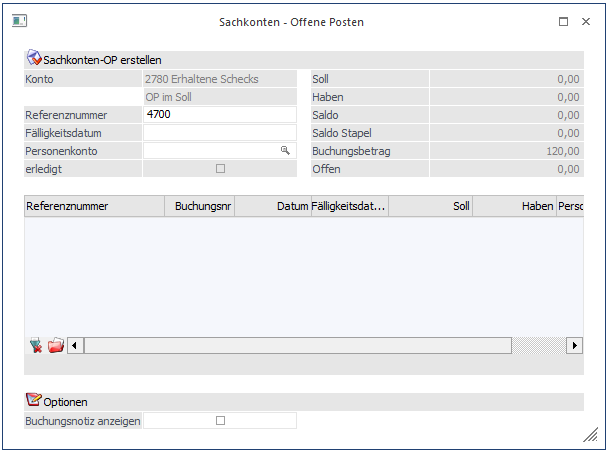
Hier kann zusätzlich ein Fälligkeitsdatum und ein Personenkonto eingetragen werden, welches bei der Liste Sachkonten - Offene Posten ausgewertet werden kann. Weiters kann dieser OP mit der Checkbox "erledigt" sofort ausgeziffert werden.
Button
Ø OK
Mit dem OK-Button wird der Sachkonten-OP erstellt.
Wird ein Konto ausgewählt, bei dem ein offener Sachkonten-OP ausgeglichen wird erscheint folgendes Fenster:
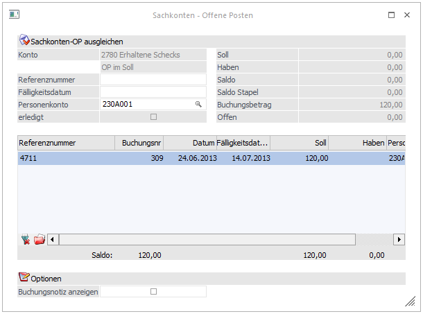
Hier werden bei übereinstimmender Referenznummer die gebuchten Sachkonten-OPs in der Tabelle angezeigt. Ergibt die Zeile „Offen“ im Berechnungsteil 0, wird der Sachkonten-OP mittels Checkbox "erledigt" markiert.
Buttons
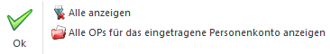
Ø OK
Mit dem OK-Button wird der Sachkonten-OP entsprechend den Bildschirmeingaben gebucht.
Ø Alle anzeigen
Es werden alle noch offenen Sachkonten-OP angezeigt.
Ø Alle OPs für das eingetragene Personenkonto anzeigen
Es werden lediglich die mit dem angegebenen Personenkonto in Verbindung stehenden offenen Sachkonten-OP angezeigt.
Ø BelegNr
Belegnummer des Buchungsbeleges. Diese Nummer wird automatisch auch als Fakturennummer im OP-Bereich vorgeschlagen, es dürfen keine Sonderzeichen wie ' oder % verwendet werden.
Ø Symbol
Diese Grafik zeigt an, ob ein Nummernkreis in der Buchungsart hinterlegt und aktiv ist.
Ø OP-Nummer
Die OP-Nummer wird automatisch aus der Belegnummer vorgeschlagen. Die OP der Fakturentabelle wird anhand dieser Nummer erstellt. Dieses Feld muss in WinLine START in den FIBU-Parameter aktiviert werden (siehe Kapitel "FIBU-Parameter", Handbuch WinLine START).
Hinweis
Gibt man bei einer Zahlung in diesem Feld eine Fakturennummer (bzw. einen Teil einer Fakturennummer) ein, so wird auch in der Projektnummer gesucht. Es wird diese Faktura (bzw. jene Fakturen die einen Teil der angegeben Nummer enthalten) automatisch in der Fakturentabelle zur Zahlung angezeigt und selektiert.
Entspricht kein Offener Posten der Angabe, so werden alle OP'S angezeigt.
Ø Text
Buchungstext, es können bis zu 50 Zeichen Kurztext eingegeben werden, oder nach Drücken der F9-Taste bis zu 2000 Zeichen Freitext (Notizblock-Funktion). Dieser Freitext kann im Journal durch Aktivieren der Checkbox Notizen drucken abgerufen werden.
Ø B/N/F
Hier kann entschieden werden, wie der Buchungsbetrag eingegeben werden soll. Dabei gibt es folgende Möglichkeiten:
B Der Betrag wird Brutto (inkl. Steuer) eingegeben
N Der Betrag wird Netto (exkl. Steuer) eingegeben
FB Es wird ein eigenes Fenster geöffnet, in das der Buchungsbetrag in Fremdwährung "Brutto" eingegeben werden kann. Dabei kann neben der Fremdwährung auch der Kurs und die Einheit geändert werden. Die Notierung (lt. FW-Stamm) bleibt jedoch gleich und wird natürlich bei der Umrechnung berücksichtigt.
FN Es wird ein eigenes Fenster geöffnet, in das der Buchungsbetrag in Fremdwährung "Netto" eingegeben werden kann. Dabei kann neben der Fremdwährung auch der Kurs und die Einheit geändert werden. Die Notierung (lt. FW-Stamm) bleibt jedoch gleich und wird natürlich bei der Umrechnung berücksichtigt.
Wurde ein Konto angesprochen, bei dem eine Fremdwährung hinterlegt ist, wird FB für Fremdwährung Brutto automatisch vorgeschlagen (kann natürlich in FN für Fremdwährung netto geändert werden) und man gelangt automatisch in die Fremdwährungserfassung.
Ø Betrag
Betragseingabe
Durch Drücken der F9-Taste oder Anklicken des  -Buttons wird das Umrechnungsfenster
geöffnet, in dem der Betrag auf Basis der im Mandantenstamm hinterlegten
Landeswährungen (z. B. CHF und EURO) sowohl in Landeswährung 1 als auch in
Landeswährung 2 eingegeben werden kann. Zum Buchen wird dann der Betrag in
Landeswährung 1 verwendet.
-Buttons wird das Umrechnungsfenster
geöffnet, in dem der Betrag auf Basis der im Mandantenstamm hinterlegten
Landeswährungen (z. B. CHF und EURO) sowohl in Landeswährung 1 als auch in
Landeswährung 2 eingegeben werden kann. Zum Buchen wird dann der Betrag in
Landeswährung 1 verwendet.
Ø USt
Steuerzeile des Unternehmensstammes
U
Umsatzsteuer
V
Vorsteuer
Danach folgt die Nummer der entsprechenden Zeile im Unternehmensstamm (z.B. 2), der Prozentsatz (z.B. 20 %) wird zur Information (nach dem USt-Betrag) ebenfalls angezeigt.
Ø Betrag
Umsatzsteuer-Betrag der Buchungszeile, wird errechnet.
Durch Drücken der F9-Taste oder Anklicken des -Buttons wird das Umrechnungsfenster
geöffnet, in dem der Betrag auf Basis der im Mandantenstamm hinterlegten
Landeswährungen (z. B. CHF und EURO) sowohl in Landeswährung 1 als auch in
Landeswährung 2 eingegeben werden kann. Zum Buchen wird dann der Betrag in
Landeswährung 1 verwendet.
Ø Satz
In diesem Feld wird der Steuerprozentsatz angezeigt, der bei der Buchung zur Anwendung kommt.
Ø KORE-Betrag
In diesem Feld wird der Betrag angezeigt, der auch in die Kostenrechnung übergeben werden muss. In diesem Feld wird nur dann ein Betrag angezeigt, wenn in einem der verwendeten Konten eine Kostenart hinterlegt wurde (Siehe auch Kapitel Sachkonten).
Ø Archivnummer
In dieser Spalte kann ein Archivdokument, d.h. die Dokumentenkreisnummer (siehe dazu das Kapitel "Nummernkreise") angegeben werden, das lt. Einstellung in der Buchungsart beschlagwortet werden soll. Eingefügt kann das Dokument auf mehrere Arten werden:
1. Die Dokumentenkreisnummer wird manuell eingetippt.
2. Ist die Archivsuche geöffnet, kann das Dokument mittels Drag & Drop in die Buchungszeile gezogen werden.
3. Ist die Archivsuche geöffnet, und der Focus auf ein archiviertes Dokument gesetzt, kann in der Buchungszeile mit der "F3"-Taste die Dokumentenkreisnummer übernommen werden.
4. Das Dokument kann direkt via Drag & Drop z.B. aus dem Explorer auf die Buchungsmaske gezogen werden. Voraussetzung dafür ist, dass über den Formulartyp die Dokumentenkreisnummer vorgesehen ist.
Weiters wird in diesem Feld die Dokumentennummer angezeigt, die vom Programm automatisch vergeben wird wenn Buchungen mittels Signaturserver-Import erzeugt werden.
Beispiel
- Gebucht wird eine Kreditorenfaktura, die bereits eingescannt und archiviert wurde.
- Das Archivdokument hat die Beschlagwortung "Dokumentenkreisnummer"-"ER2" (sowie das Tagesdatum und die Abteilung) hinterlegt.
- In der Buchungsart "KF" sind die Archivschlagwörter "Kontonummer", "Fakturendatum", und "Fakturennummer" hinterlegt.
- In der Buchungszeile wird die Dokumentenkreisnummer (auf eine der 3 möglichen Arten) eingefügt.
- Die Buchung wird abgesetzt, und dem Archivdokument wird die Beschlagwortung automatisch hinzugefügt.
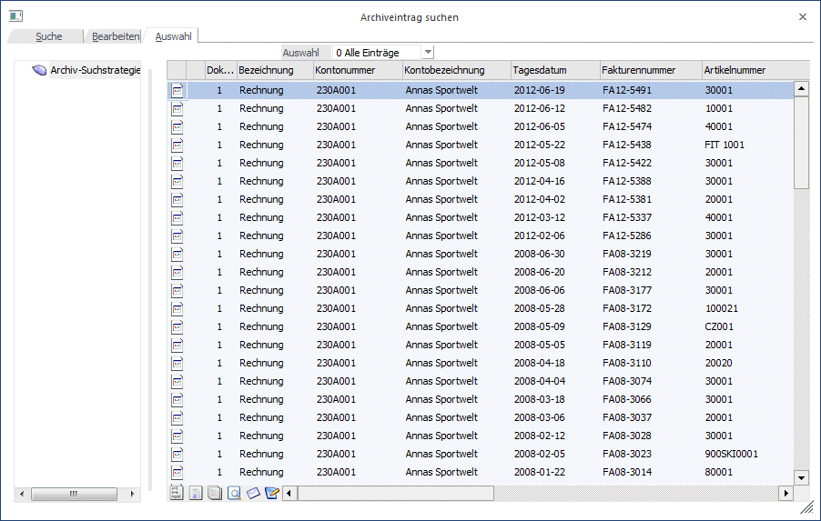
Hinweis
Wird die Kontonummer als Schlagwort definiert, so wird automatisch auch die Kontenbezeichnung hinzugefügt.
Ist die Dokumentenkreisnummer bereits in Verwendung, d.h. gibt es bereits ein archiviertes Dokument, oder gibt es eine Buchung in der Tabelle oder in einem gespeicherten Stapel das die Dokumentenkreisnummer verwendet, erfolgt eine Warnung. Wird die Zuordnung der Dokumentenkreisnummer trotzdem verwendet, wird dem angegebenen Dokument die Beschlagwortung aus dem "aktiven" Buchungssatz zugeordnet.
Die Bearbeitungsmöglichkeiten und logischen Prüfungen der Datenfelder hängen von den in der Buchungsart getroffenen Vorbesetzungen ab.
Ø Abgrenzungskonto
Wird das Abgrenzungskonto aus den FIBU-Parametern in einer Buchungszeile als Soll- oder Haben-Konto verwendet, wird in diesem Feld ein Abgrenzungskonto, z.B. das Aufwands- oder Erlöskonto eingetragen oder über den Matchcode mit F9 ausgewählt. Über das Programm Abgrenzungsbuchungen werden diese Buchungen gemäß dem vorgegebenen Leistungsdatum aufgelöst, damit sie in der richtigen Leistungsperiode erfolgswirksam werden.
Ø Leistungsdatum
Wurde ein Abgrenzungskonto in der Buchungszeile eingetragen, muss auch das Leistungsdatum erfasst werden. Das Leistungsdatum muss nicht im aktuellen Wirtschaftsjahr liegen, es kann auch ein Datum im Folgejahr sein.
Wird das Abgrenzungskonto nicht verwendet, so kann trotzdem ein Leistungsdatum hinterlegt werden. Die Felder Abgrenzungskonto und Kostenstelle können dann nicht gefüllt werden. Dieses Leistungsdatum wird dann für die Abgrenzung der Skontobuchung (sofern mit Skonto gezahlt wurde) verwendet. Die Skontobuchung wird in diesem Fall immer mit dem Abgrenzungskonto aus den FIBU-Parametern bebucht.
Ø KSt (Abgrenzung)
Die Kostenstelle für die Abgrenzungsbuchung wird hier eingetragen oder über den Matchcode mit F9 ausgewählt, wenn als Abgrenzungskonto ein Sachkonto mit hinterlegter Kostenart eingetragen wurde. Diese Kostenstelle wird bei der Auflösung der Abgrenzungsbuchung, die über das Programm Abgrenzungsbuchungen vorgenommen wird, bebucht.
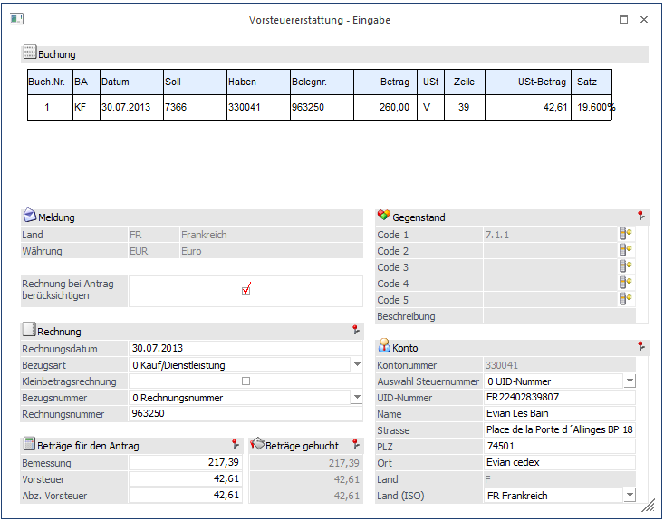
In diesem Fenster können schon beim Erfassen der Buchungen die für die Vorsteuererstattung notwendigen Daten eingegeben werden.
Hinweis
Der Button steht nicht zur Verfügung, wenn im Mandanten keine Steuerzeilen für die Vorsteuererstattung definiert sind und das Landeskennzeichen nicht "Österreich" ist. Ansonsten steht der Button immer zur Verfügung.
Wird also der Button für eine Buchung geklickt, die nicht bei der Vorsteuererstattung mitspielt, da z.B.: keine Vorsteuer gebucht, keine Steuerzeile mit hinterlegtem Land verwendet wird usw., wird das Fenster nicht geöffnet und eine entsprechende Meldung wird ausgegeben.
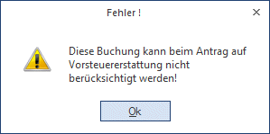
Beim Klicken des Buttons wird die aktuelle Buchung geprüft, d.h. gegebenenfalls wird noch die OP erzeugt bzw. muss die KORE eingegeben werden, bevor das Fenster geöffnet werden kann.
Beim erstmaligen Öffnen des Fensters wird die Buchung analysiert und die Felder im Fenster werden aus der Buchung bzw. den Konten gefüllt. Dabei werden alle Zeilen einer Splitbuchung berücksichtigt, d.h. dass es keine Rolle spielt in welcher Zeile einer Splitbuchung der Button geklickt wird.
Wird das Fenster erneut geöffnet, werden die zuvor gespeicherten Eingaben wieder geladen und angezeigt.
Im Fenster "Vorsteuererstattung - Eingabe" wird oben in einem Info-PDB die aktuelle Buchung angezeigt.
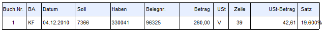
Darunter können alle Felder bearbeitet werden, die auch im Menüpunkt "Vorsteuererstattung" zur Verfügung stehen.
Hier werden auch die Felder gegraut, die abhängig von den aktuellen Einstellungen nicht zur Verfügung stehen, so werden z.B. bei einem "Import" die "Kleinbetragsrechnung" und die Felder für die "Steuernummer" grau hinterlegt.
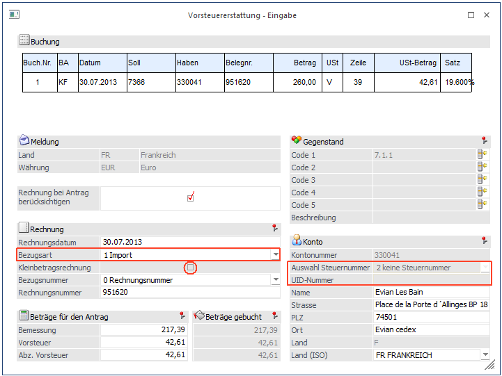
Abhängig von den Eingaben im Fenster werden auch die Combos gefüllt, d.h. bei einem "Kauf" steht als "Bezugsnummer" nur die "Rechnungsnummer" zur Verfügung, bei einem Import zusätzlich auch die "Importnummer", für Deutschland steht im Feld "Auswahl Steuernummer" zusätzlich zur UID-Nummer auch die "Steuernummer" zur Verfügung, die Combo "Land (ISO)" wird abhängig von der Auswahl Kauf/Import gefüllt.
Wird die Bezugsart von "Kauf" auf "Import" geändert, wird das Feld "Steuernummer" initialisiert. (Siehe Bild oben). Wird nun wieder auf den "Kauf" zurückgesetzt, so wird die UID-Nummer aus dem Kontenstamm wieder eingetragen bzw. geladen.
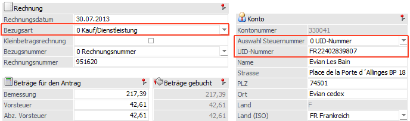
Zusätzlich wird auch geprüft, ob das ausgewählte "Land (ISO)" gültig ist, denn nicht alle für "Import" gültigen Länder sind auch für "Kauf" gültig. In solch einen Fall wird die Eingabe in diesem Feld zurückgesetzt.
Unten im Fensterbereich werden neben den editierbaren Beträgen, entweder die aus der Buchung gerechneten Beträge angezeigt, oder aber die Beträge in der verwendeten Fremdwährung, wenn diese nicht der Währung des Landes entspricht. In diesem Fall werden die Beträge wie auch im Menüpunkt "Vorsteuererstattung" auf 0 gesetzt für den Antrag.
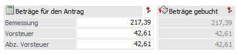
Hinweis
Mit F3 können die Beträge jeweils wieder auf den aus der Buchung berechneten Wert zurückgesetzt werden.
Zudem kann auch noch das Rechnungsdatum für die Buchung editiert werden.
Es ist auch Möglich die Vorsteuererstattungs-Codes pro Buchung direkt bei der Eingabe zu ändern.
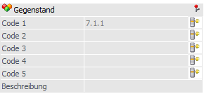
Beim Klick auf den Vorsteuererstattungs-Code-Button wird das Fenster, wie im Kontenstamm, geöffnet. Wird der Code "10. Sonstiges" ausgewählt, wird hier auch der eingegebene Beschreibungstext übernommen.
Zudem wird noch überprüft, ob auch jeder Code nur 1x vorkommt. Kommt ein Code doppelt vor, wird eine entsprechende Meldung ausgegeben.
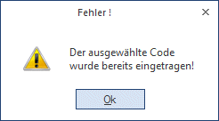
Achtung
Die Eingaben in diesem Fenster werden nicht auf Gültigkeit oder Vollständigkeit geprüft, damit die Eingaben auch gespeichert werden können, wenn sie noch nicht vollständig sind.
Die Prüfung der Eingaben erfolgt, dann beim Erstellen der XML-Datei für die Vorsteuererstattung.
Hinweis
Eine Ausnahme ist die UID-Nummer, diese wird bereits in diesem Fenster geprüft, da sie auch hier in den Kontenstamm zurückgeschrieben werden kann, sofern das verwendete Konto ein Personenkonto ist. Nach einer Änderung kann mit "F3" der Wert aus dem Kontenstamm wiederhergestellt werden.
Die Prüfung erfolgt, jedoch nur für Österreich, Deutschland und Italien.
Nachdem die Eingaben gespeichert wurden, wird das Fenster geschlossen und der Focus wird wieder auf die entsprechende Buchung in der Buchungstabelle gesetzt.
Wird das Fenster mit "Ende" verlassen, werden die Eingaben nicht gespeichert, d.h. die beim Öffnen des Fensters angezeigten Werte bleiben erhalten.
Buttons
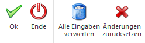
Ø Alle Eingaben verwerfen
Mit dem Button werden nach einer Abfrage alle Eingaben gelöscht und das Fenster wird geschlossen.
Ø Änderungen zurücksetzen
Im Gegensatz dazu bleibt bei diesem Button das Fenster geöffnet und die Werte werden erneut aus der Buchung vorbelegt.
Wird nach dem Erfassen der Vorsteuererstattungs-Daten die Buchung in der Buchungstabelle noch geändert, werden die Eingaben zurückgesetzt und es wird auch eine entsprechende Meldung ausgegeben.
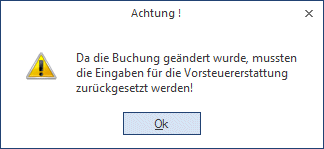
Das Verwerfen der Eingaben passiert, wenn eines der folgenden Felder geändert wird:
ü Konto Soll
ü Konto Haben
ü Brutto/Netto/Fremdwährung
ü Betrag
ü Steuerzeile
ü Steuerbetrag
ü FW-Code
ü FW-Betrag
Nachfolgend werden die weiteren Erfassungs-Tabellen beschrieben, die bei jeder verwendeten Buchungsart unterschiedlich sein können.
Tabellenbuttons
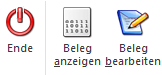
Ø Belegzeilen anzeigen
Wird dieser Button geklickt, so öffnet sich das Fenster "Buchen-Belegzeilen".
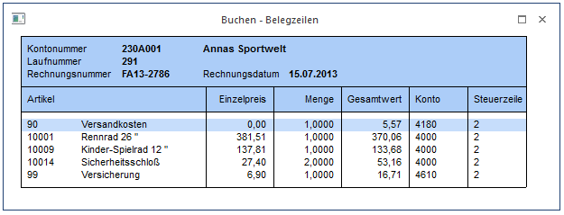
Damit ist es möglich direkt in dem Buchungsfenster eine in einem FAKT-Stapel vorhandene Faktura zu editieren. Es wird sofort die Beleg-Information (aus der FAKT) zur aktuell ausgewählten Buchungszeile angezeigt. Wird durch den Stapel gescrollt, so wird die Anzeige dementsprechend aktualisiert. Jene Artikelzeilen, die die aktuelle Buchungszeile betreffen, werden zuerst angedruckt und farblich hervorgehoben, alle weiteren Artikelzeilen folgen danach. In dem Fenster stehen zwei weitere Buttons zur Verfügung:
Ø Beleg anzeigen
Damit wird die Beleg-Vorschau direkt in der FIBU geöffnet
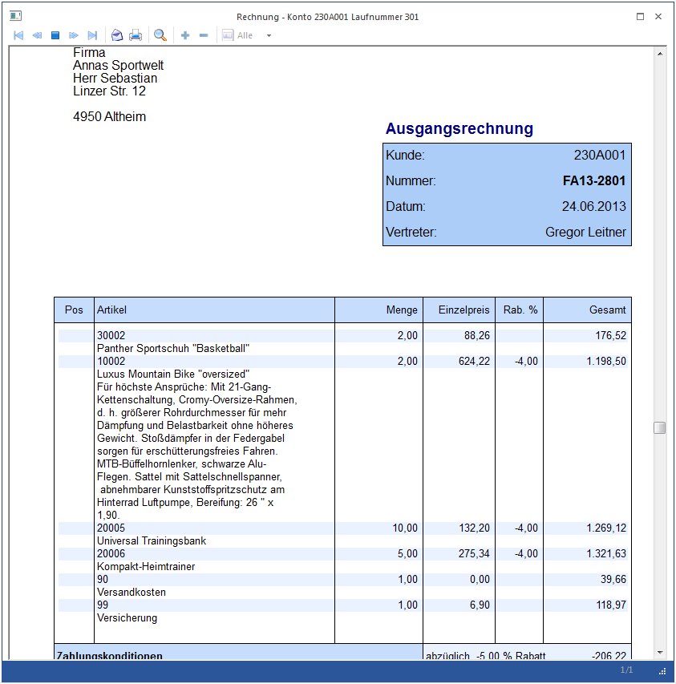
Ø Beleg bearbeiten:
Beim Klick auf dem Button wird das Belegerfassen-Fenster ohne eine weitere Nachfrage geöffnet und der ausgewählte Beleg wird geladen und kann editiert werden. Dabei können wie beim "normalen" Editieren diverse Änderungen durchgeführt werden:
ü Artikel hinzugefügt oder gelöscht werden
ü Mengen, Erlöskonten, Preise, Steuerzeilen usw. geändert werden
ü Belegarten und damit die zu erzeugenden FIBU-Buchungen geändert werden
ü Zahlungen erfasst werden
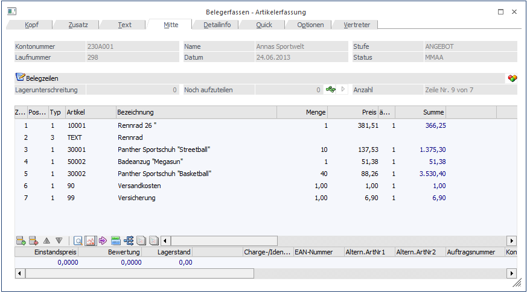
Nachdem die Änderungen im Beleg in der FAKT abgeschlossen sind, werden in der FIBU alle Buchungen in der Buchungstabelle aktualisiert, die den geänderten Beleg betreffen.
Achtung
Während das Belegerfassen-Fenster aktiv ist, kann im Buchungsfenster nicht weitergearbeitet werden, es wird bei jedem Klick in das Buchungsfenster eine entsprechende Meldung ausgegeben und wieder in die FAKT zurück gewechselt.
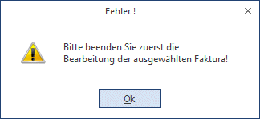
Nach Abschluss der Änderungen in der FAKT, wird die Buchung in der Buchungstabelle in der FIBU aktualisiert. Dabei werden neu hinzugekommene Buchungen am Ender der Buchungstabelle angehängt und entfernte Buchungen aus der Buchungstabelle gelöscht.